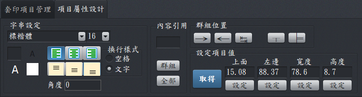
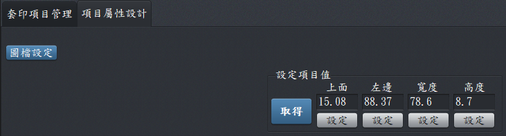

文件內容設計-項目屬性設定
項目屬性設計，會依套印項目類型(字串或圖檔)，顯示相關的功能提供不同的設定選項。
一、字串類型：

內容設計工作頁–字串類型
- 字串設定：與Word使用的方式相同，可調整顏色、大小、框線之類的功能。
- 內容引用：依指定的套印項目的大小、顏色..等，改變群組或文件上面相同類型的套印項目的屬性(設定)值。
- 輸入框：如有輸入資料，可以修改群組或全部套印項目的「內容範例」值。若為空白 (預設值)則不影響其他項目。
- 群組：可改變套印項目群組所有成員的屬性。例如全部改為置中對齊。
- 全部：可以改變該文件所有字串類型套印項目的屬性，例如字體全部設為標楷體，大小設為12。
- 群組位置：可將整個群組成員的套印項目位置作均分、同左、同高處理。共有5個按鈕，分別說明如下：
- 群組成員的套印項目位置作均分(第1~3按鈕併用)：以日期為例，日期分為年月日，先將年及日，移到適當位置後，先點選年，再點選第1個按鈕，點選日，再選選第二個按鈕，然後再按3個按鈕後，軟體就會依年、日的距離，自動算出月這個套印項目的位置，這用於統一編號或帳號相當有用。
- 同高：點選群組任一成員，，按下(第4個按鈕)即可。
- 同左：點選群組任一成員，按下(第5個按鈕)即可。
二、圖檔類型：套印項目如為圖檔類型，執行「圖檔設定」可以加入、移除其指定的圖檔。

項目屬性設計工作頁–圖檔類型